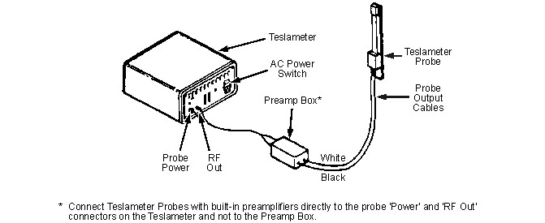
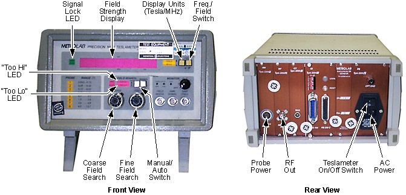

Operating Documentation
Direction 5670000, Rev# 1
Optima MR450w 1.5T Service Methods
Module Version 1.0, Version Date 9/29/09
Operating Documentation |
| Required Persons | Preliminary Reqs | Procedure | Finalization |
|---|---|---|---|
| 1 | Included in 'Procedure' | 1 hours | Included in 'Procedure' |
A Teslameter connected to a single Teslameter Probe is used whenever the strength of the magnet's magnetic field must be measured, monitored or mapped. A single Teslameter Probe accurately positioned at the magnet's iso-center may be used whenever only a single measurement of the magnet's overall magnetic field strength is required. A Shim Camera Kit with appropriate field range and a Universal Field Mapping Fixture Kit (5266042-2) are required when measuring a detailed map of the magnet field strength within a spherical volume.
| NOTE: | Included in this section are:
|
| Item | Qty | Effectivity | Part# | Manufacturer | |
|---|---|---|---|---|---|
| Brass Master Padlock with Brass Shackle | 1 | - | 46-194427P320 | - | |
| Brass Master Transition Padlock | 1 | - | 2387081 | - | |
| Black & White on Red Lockout Tag, package of 25 | 1 | - | 46-194427P322 | - | |
| Transition LOTO Tag | 1 | - | 46-194427P313 | - | |
| Line Cord Plug Cover, Plugs ≤ 3 in. (76 mm) wide x ≤ 5.875 in. (149 mm) long, Cords ≤ 1.25 in. (31 mm) dia. | 1 | - | 46-194427P321 | - | |
| MetroLab Teslameter Kit | 1 | - | 46-251865G4 | - | |
| #5 MetroLab Probe (included in MetroLab Teslameter Kit 46-251865G4) | 1 | - | 46-255839P104 | - | |
| Universal Field Mapping Fixture | 1 | - | 5266042-2 | - | |
| Digital Voltmeter (DVM), Volt-Ohm Meter (VOM) or non-contact voltage tester | 1 | - | - | - | |
| Oscilloscope (optional) | 1 | - | - | - | |
| Cardboard box or nonferromagnetic frame (for field monitoring) | 1 | - | - | - | |
| Non-ferromagnetic Tape Measure, 6 feet (1 meter) long, minimum | 1 | - | - | - | |
| Nonmagnetic Tools Kit (magnets with magnetic fields ≤ 1.5T only) | 1 | - | 46-320273G4 | - | |
| Service Methods documentation for the magnet/enclosures (available through the Common Document Library at gehealthcare.com or through your local GE Healthcare Service Representative) | 1 | - | - | - | |
| Stopwatch or other timer | 1 | - | - | - | |
| Item | Qty | Effectivity | Part# | Manufacturer |
|---|---|---|---|---|
| Permatex (1 oz. tube: 2119594) or Bostik (4 oz. can: 46-294151P8) anti-seize lubricant | 1 | - | - | - |
| NOALOX Compound Lubricant (46-252065P65) or mechanical grease | 1 | - | - | - |
| ||||
| Potential Projectile Hazard | ||||
| Ferromagnetic objects in a strong magnetic field can become dangerous projectiles. | ||||
| Never bring ferromagnetic material into the magnet room. Make sure all equipment and tools used in the magnet room are non-ferromagnetic. |
| ||||
| Electrical Shock Hazard | ||||
| Contact with connectors leading to an energized Teslameter can cause electrical shock. | ||||
| Whenever the input power to the Teslameter is disconnected, Follow lockout/tagout procedures to make sure power is not supplied to the Teslameter. See OSHA Lockout-Tagout. |
| Condition | Reference | Effectivity |
|---|---|---|
The Magnet Bore should be clear for mounting and operating the Field Mapping Fixture. | - | - |
When a measurement of overall magnetic field strength is required, only a single probe accurately placed at the magnet's center is necessary. If field mapping will be performed soon after field monitoring, set up for field mapping in conformance with Passive Shimming for MR450w.
Mount a #5 MetroLab Probe (46-255839P104) on a cardboard box or nonferromagnetic frame. See Illustration 1.
Illustration 1: Teslameter Probe Set-Up for Field Monitoring

Position the box or frame along the magnet's Z-Axis half way between the bore's patient and service ends.
Verify using measurements that the Probe is centered on the magnet's X, Y and Z Axes.
Make sure input power to the Teslameter is disconnected. Lockout/tagout Teslameter input power. Verify that no voltage is present by using a DVM or equivalent measuring device.
Connect the probe to the Teslameter and set-up the Teslameter in conformance with Teslameter Adjustment and Resynchronization, Teslameter Adjustment and Resynchronization.
Remove lockout/tagout and connect input power to the Teslameter.
| ||||
| Electrical Shock Hazard | ||||
| Contact with connectors leading to an energized Teslameter can cause electrical shock. | ||||
| Whenever the input power to the Teslameter is disconnected, follow lockout/tagout procedures to make sure power is not supplied to the Teslameter. |
Make sure input power to the Teslameter is disconnected. Lockout/tagout Teslameter input power. Verify that no voltage is present by using a DVM or equivalent measuring device.
| ||||
| Potential Projectile Hazard | ||||
| Ferromagnetic objects in a strong magnetic field can become dangerous projectiles. | ||||
| Never bring ferromagnetic material into the magnet room. Make sure all equipment and tools used in the magnet room are non-ferromagnetic. |
Mount and center a #5 Teslameter Probe (46-255839P104) in the magnet's bore.
If a detailed map of the magnet's magnetic field is required, assemble Universal Field Mapping Fixture (5266042-2) and mount the Probe in conformance with Passive Shimming for MR450w.
If a single overall magnetic field strength reading at the magnet's center is required instead of a detailed magnetic field map, mount the Probe in conformance with Preparation for Field Monitoring, Preparations for Field Monitoring.
Connect the white wire from the Preamp Box to the Teslameter Probe's left input jack and the black wire from the Preamp Box to the right, lacing connector end of the Probe. (See Illustration 2.)
Illustration 2: Teslameter Interconnections

Connect the Preamp Box to the two-probe connection input plug on the Teslameter.
Verify using measurements that the Teslameter Probe is at the physical center of the magnet bore (R = 0 and Z = 0).
Remove lockout/tagout and connect input power to the Teslameter.
Turn on AC power to the Teslameter. (See Illustration 3.)
Illustration 3: Teslameter Front and Back Views

| ||||
| If the Manual/Auto Switch is not in its “Manual” position when magnetic field search begins during ramping, its sweep will be in the ± 1 Tesla range and the system could lock on to the mechanical oscillation harmonic of the Shield Cooler Coldhead, resulting in an erroneous reading. | ||||
Place the Manual/Auto Switch in the “Manual" position.
Set the Coarse and Fine Field Search controls fully counterclockwise (CCW ).
Set the Freq./Field Switch to the “Field” position.
| NOTE: |
|
Once ramping has started, monitor the Power Supply's Current Meter until an indication of ≈ 350 amps is approached, then start monitoring the Teslameter.
As the developing magnetic field approaches the lower limit of the Teslameter probe (≈ 0.7 Tesla), the “Strobe Lock” LED will start blinking. When this LED goes out, reposition the Manual/Auto Switch to the “Lock" position. (See Illustration 3.)
| NOTE: | If the signal does not lock in, reposition of the Probe Modulation Switch. |
As the magnetic field continues to increase, the "HI" LED above the Coarse Field Search control will light. Turn the Coarse Field Search control clockwise (CW) until the LED is extinguished.
As the magnetic field increases, the resonant frequency of the probe sample will increase above the Teslameter's range setting. Periodically increase the setting of the Coarse Field Search control to keep the Teslameter locked on the probe sample.
| NOTE: | The Fine Field Search control does not function when the Manual/Auto Switch is in the “Locked” position. |
Increase the Coarse Field Search control setting until a magnetic field reading of ≈ 1.5 Tesla (≈ 1.0 Tesla on a 1.0 Tesla magnet) is obtained. This should occur near but slightly below the actual magnetic field.
Slowly start increasing the Fine Field Search control. When the “Strobe Lock” LED stops blinking and remains out, reposition the Manual/Auto Switch to the “Locked" position.
| NOTE: | If the signal will not lock on, reposition of the Probe Modulation Switch. |
Once the Teslameter is locked onto the magnetic field, either the “LO" or “HI" LED will be lit. Turn the Coarse Field Search control counterclockwise (CCW) if the “LO” LED lit or clockwise (CW) if the “HI” LED is lit. Slowly the lit LED will go out and stay out.
As the magnetic field decreases, the resonant frequency of the probe sample will decrease below Teslameter's range setting. Periodically decrease the Coarse Field Search control to keep the Teslameter locked on the probe sample.
| NOTE: | The Fine Field Search control does not function when the Manual/Auto Switch is in the “Locked” position. |
If the Teslameter should go out of sync while ramping the magnet up (or down), it can easily be resynchronized by the following procedure.
Manual Resynchronization
Reposition the Manual/Auto Switch to “Manual".
| NOTE: | The “Strobe Lock” LED will be on and both the “LO" and “HI" LEDs will be oscillating, indicating a search mode. |
Read the Main Power Supply's Current Meter. Multiply the meter's present current reading by 20 gauss (since there's ≈ 20 gauss/amp). Reset the Current Meter this calculated value.
Slowly start increasing (if ramping up) the Coarse and/or Fine Field Search control while monitoring the “Strobe Lock” LED.
Once the “Strobe Lock” LED light extinguishes, quickly place the Manual/Auto Switch to the “Locked" position. The meter will now be synchronized.
| NOTE: | If the “HI" LED is lit, the Coarse Field Search control will have to be turned clockwise (CW) until the LED goes out. Repeat this adjustment as required until the parking field Is reached. |
Manual Resynchronization Using an Oscilloscope
| NOTE: | An oscilloscope can be set up near the Teslameter to display and trigger on the Field Modulation signal from a jack on the Teslameter's front panel. Adjust the time base to display one or two ramp waveforms. On the second channel, display the “NMR Signal" from the Teslameter's front panel. |
Leave the Teslameter's Manual/Auto Switch in the “Locked" position.
Slowly turn the Coarse Field Search control in the direction the magnetic field is going (i.e., if the magnetic field is increasing, turn the control towards the higher numbers; if the magnetic field is decreasing, turn the control towards the lower numbers).
| NOTE: | As the meter is approaching the actual magnetic field, the baseline of the "FID" display will start to wander. Once the meter is in range of the magnetic field, the "FID" will appear on the scope trace as the meter locks on. |
When locked on, the “Strobe Lock” LED will be out. Slightly readjust the Coarse Field Search control counterclockwise (if the “LO” LED lit) or clockwise (if the “HI” LED is lit) until the lit LED goes out.
Maintain tracking through end of ramp sequence.
No finalization steps.